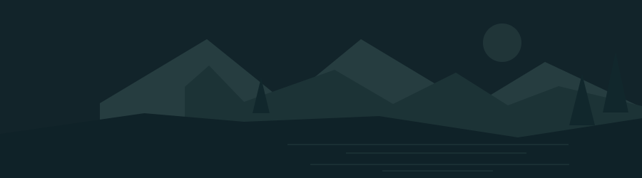

Mencari tahu daya tahan distribusi dan rencana ekspansinya.
8 Okt 2026
Buka
RUANG BERPIKIRMU
Simpan alasanmu. Beri ruang untuk memahami.

Kamis, 8 Oktober 2026Aku tertarik dengan jaringan distribusinya, tapi masih perlu cari tahu…
Belum perlu punya kesimpulan.
Mencari tahu daya tahan distribusi dan rencana ekspansinya.
Ingin memahami jaringan pelanggan dan kebutuhan modalnya.
Belum cukup membaca. Mulai dari model bisnisnya dulu.